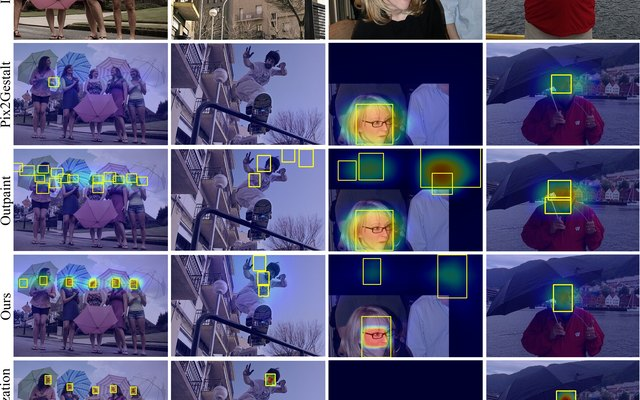

Changlin Song 宋昌霖
PhD student in Computing at the Australian National University, supervised by Dylan Campbell. I work on embodied agents and control, computer vision, 3D vision and spatial intelligence.
News
- Extreme Amodal Face Detection accepted to WACV 2026 as an oral.
- Started my PhD at ANU.
Research
The agent authors the skill. Physics runs it.
Changlin Song, with GE and the University of Pennsylvania
Ongoing project, 2026
An LLM agent writes whole-body skills for a Boston Dynamics Spot, and a physics-based sampling MPC runs them outdoors with no demonstrations and no per-task training.

Extreme Amodal Face Detection
Changlin Song, Yunzhong Hou, Michael Randall Barnes, Rahul Shome, Dylan Campbell
WACV, 2026 (Oral)
Detecting faces that are partly or entirely out of frame.

Enhancing Monocular 3D Scene Completion with Diffusion Model
Changlin Song, Jiaqi Wang, Liyun Zhu, He Weng
arXiv, 2025
Completing a 3D scene from a single image without training.

FedDistill: Global Model Distillation for Local Model De-Biasing in Non-IID Federated Learning
Changlin Song, Divya Saxena, Jiannong Cao, Yuqing Zhao
arXiv, 2024
De-biasing local training in federated learning with group distillation.
- Rethinking Test Time Scaling for Flow-Matching Generative Models
Qingtao Yu, Changlin Song, Minghao Sun, Zhengyang Yu, Vinay Kumar Verma, Soumya Roy, Sumit Negi, Hongdong Li, Dylan Campbell · arXiv 2025 · Code - Overcoming growth-induced forgetting with sparsity in task-agnostic continual learning
Yuqing Zhao, Jiannong Cao, Divya Saxena, Xiaoyun Liu, Changlin Song, Bo Yuan, Julie McCann · Neurocomputing 2026
Education
- PhD in Computing, Australian National University2025 – now
- Master of Machine Learning and Computer Vision (with Commendation), ANU2023 – 2025
- B.Eng. in Computer Science and Technology, Shenzhen University2018 – 2022
Teaching and service
- Tutor at ANU for Computer Vision, Advanced Topics in Computer Vision, Advanced Topics in Machine Learning, and Computer Graphics.
- Reviewer for IEEE Transactions on Mobile Computing and AJCAI 2025.